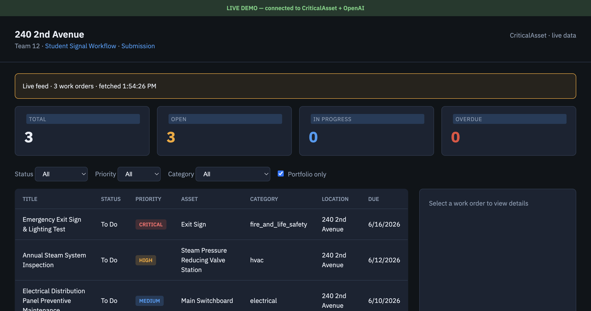
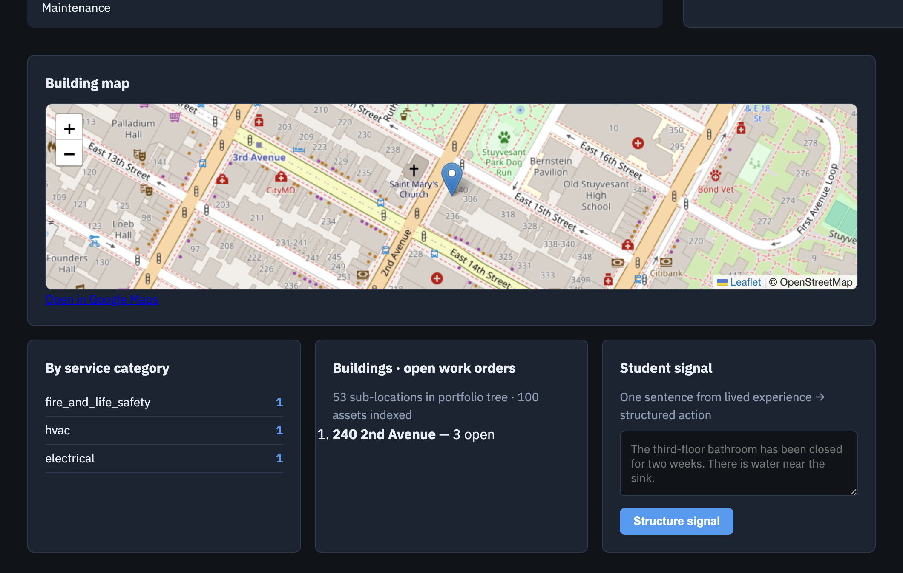
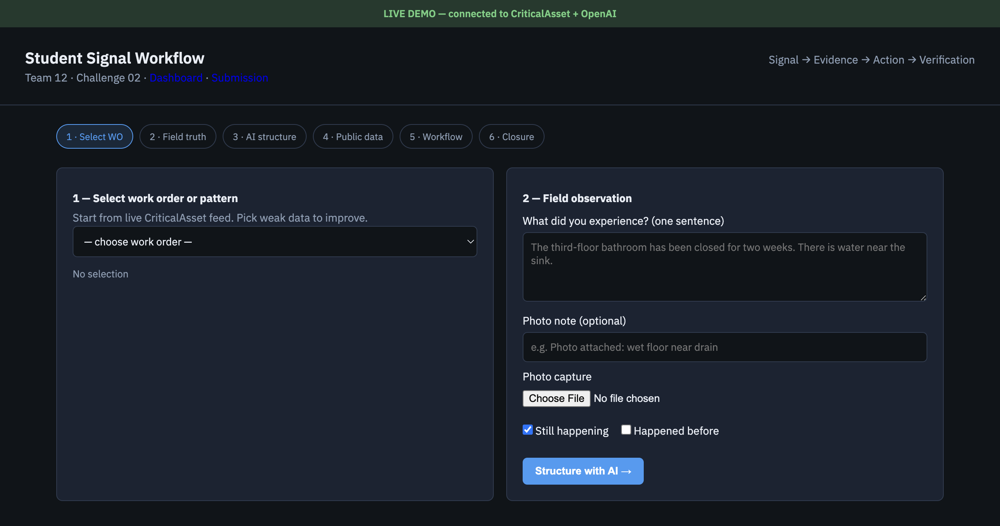
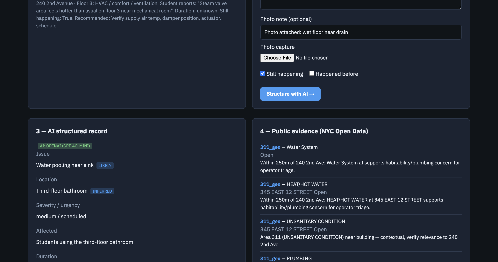
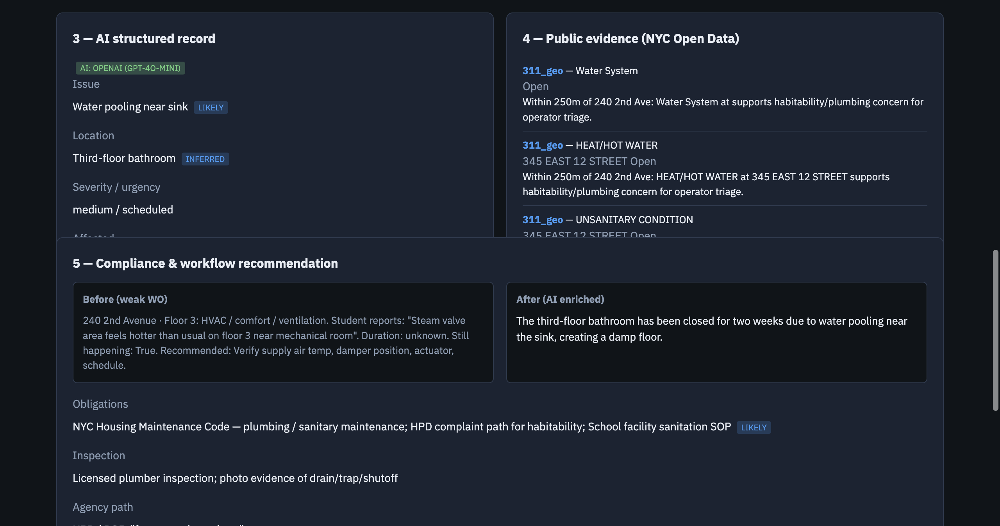
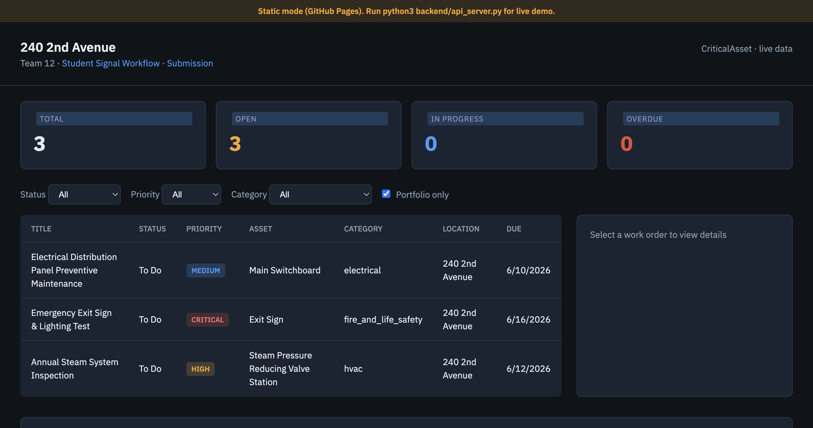

Challenge 01Challenge 02
Team 12 · The City Hacks The State · NYC Tech Week 2026 · Hub 12
Work orders exist, but field truth is thin. Students experience plumbing, HVAC, and safety issues before the system reflects them.
Live demo — backend/api_server.py on localhost:8787
gpt-4o-mini structuringGitHub Pages backup — static JSON cache
API keys stay in local .env only — never in git or Pages (see submission checklist).

Verified screenshot · localhost:8787 · Portfolio only ON · live CriticalAsset feed

Verified screenshot · Leaflet pin 40.7326568, -73.9844033 · 53 sub-locations · 100 assets

Verified screenshot · WO selection + plain-English signal + photo note

Verified screenshot · AI: OpenAI (gpt-4o-mini) · confidence labels · 35 building-specific public hits

Verified screenshot · weak WO → AI-enriched description · compliance obligations · Record to CriticalAsset

Verified screenshot · gilraitses.github.io · honest static-mode disclosure
.env / GitHub Secrets — never in client-side code